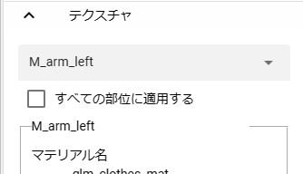

10.2. Texture
Texture settings are common to VRM and OtherObject.
Please see each site for detailed explanations.
Standard asset Water |
|
MToon reference |
|
drawing style shader |
|
Comic shader |
|
Ice shader |
10.2.1. Manipulating Textures
You can finely change the settings of the textures held by VRM and OtherObject. Both settings and usage are exactly the same.

If there are multiple materials, select the target material from the upper combo box.
The contents of the texture settings are switched.
Change various settings as you like.
10.2.1.1. Apply to all parts
Basically, it will be set for each material, but if there are many materials or you want to change the appearance of the model all at once, check this option and change the texture setting This will allow you to change them all at the same time.
Note that you cannot select a material while the checkbox is checked.
10.2.2. Ttexture details
- Shader:
Choose one of the following:
Standard,VRM/MToon,VRM10/MToon1,Water,Sketch,PostSketch,Comic,Ice
Caution
The texture changes are not actually changed only while using this app.
The opacity of each color property may not be properly reflected in WebGL. note that.
If you have multiple textures (meshes) that use the same material, only the settings of the last texture will be reflected in the final animation project. (e.g. if there are 3 textures using material A, the 3rd setting will be applied last)
VRM 0.x models also follow the VRM 1.x specifications when loaded with this app. Therefore, basically use
VRM10/MToon10shaders.
10.2.2.1. Standard
Unity standard texture.
- Color:
Change the base color of the texture.
- blend mode:
Choose one of the following:
Opaque,Cutout,Fade,Transparent- culling mode:
Choose one of the following:
Off,Front,Back- metallic:
Makes the surface look like metal.
- Glossiness:
Adds shine to the surface.
- Emitting color:
Emission Color
- Texture type:
Select
From FileorFrom Camera. In either case, you can unreference it by choosing--.
Hint
10.2.2.2. VRM10/MToon10
VRM 1.0 standard shader. It is slightly different from that of VRM 0.x.
- Color:
Change the base color of the texture.
- blend mode:
Choose one of the following:
Opaque,Cutout,Fade,Transparent- culling mode:
Choose one of the following:
Off,Front,Back- cut off:
0.5 is the base value. Anything lower than that will gradually reveal missing textures. 1.0 is completely transparent.
- Emitting color:
_EmissionColor
- shade color:
_ShadeColor
- Shadow border smoothness:
Shading Toony
- shadowed area:
Shade Shift
- Acceptance of shadows:
Receive Shadow
- shading grade:
Shading Grade
- Degree of reflection of ambient light:
Light Color Attenuation
- rim light color:
Rim color
- Rimlight border strength:
Rim Fresnel Power
- SrcBlend ~ DstBlend:
Applies complex changes in color and transparency. For details, please search the explanation site of VRM/MToon.
- Texture type:
Same as Standard
10.2.2.3. Water
A shader that represents the water surface.
- Fresnel Scale:
Fresnel Scale
- reflection color:
The color of the water surface when illuminated by light.
- mirror surface color:
The color of the reflection on the water surface.
- Wave amplitude, wave frequency, wave steepness, wave velocity, wave direction AB, wave direction CD:
Changes the frequency and magnitude of waves.
10.2.2.4. Sketch / PostSketch
This is a shader that creates a sketch-like depiction.
- outline width:
Draw lines around textured objects.
- stroke density:
- extra brightness:
- multi brightness:
- shadow brightness:
Only Sketch
10.2.2.5. Comic
It is a shader that creates a cartoon-like depiction.
- texture transparency:
The effect is similar to the VRM10/MToon10 cutoff. Make missing textures transparent.
- line width:
Draw lines around textured objects.
- Color:
Change the color of lines and shadows.
- tone threshold:
Change the tone range.
10.2.2.6. Ice
This is a shader that renders like ice.
- Color:
Change the color of the ice surface.
- Transparency:
If the transparency is a positive value, the color becomes clear as ice. As it approaches 0, it becomes transparent. More negatives start to invert colors instead of being transparent.
- basic transparency:
Multiply the transparency by the transparency.
- roughness of ice:
Rough the ice into jagged edges.
- distortion:
Changes the twist of the shape of the reflection on the ice.
10.2.2.7. PixelizeTexture
It is a shader that becomes a certain block-like texture. This is a custom shader made from scratch by ChatGPT.
- pixel size:
The size of the texture to pixelate. The larger this is, the more mosaic-like it becomes.